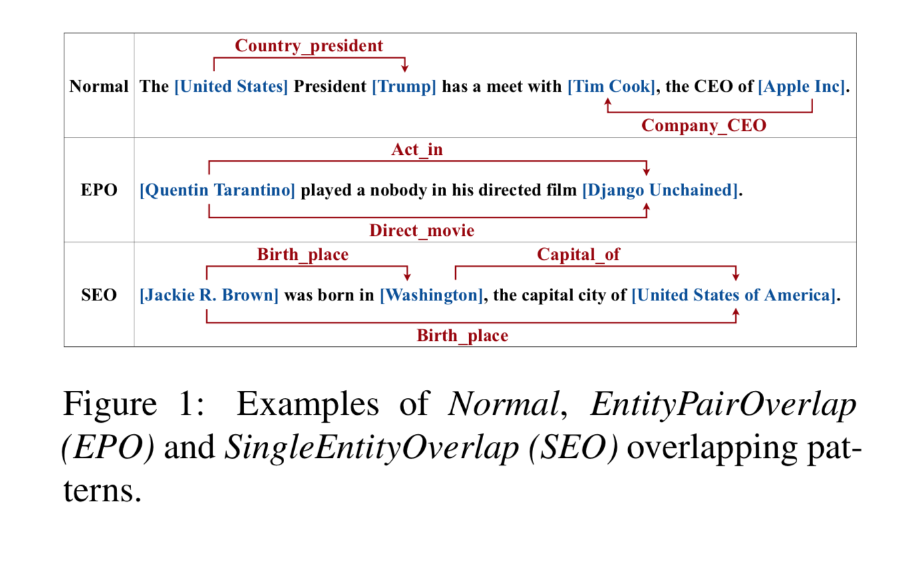
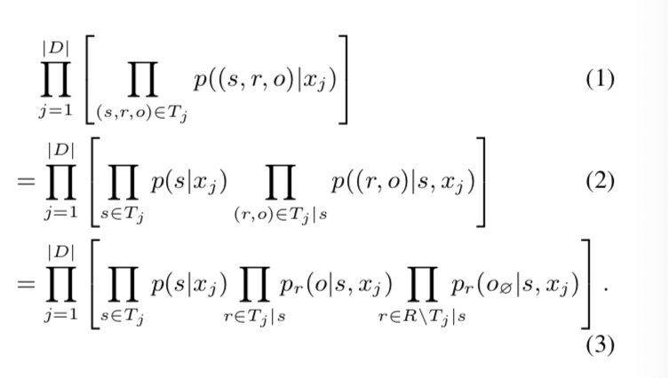
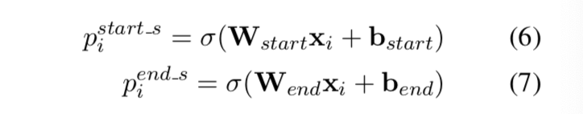
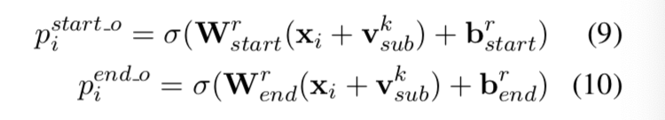
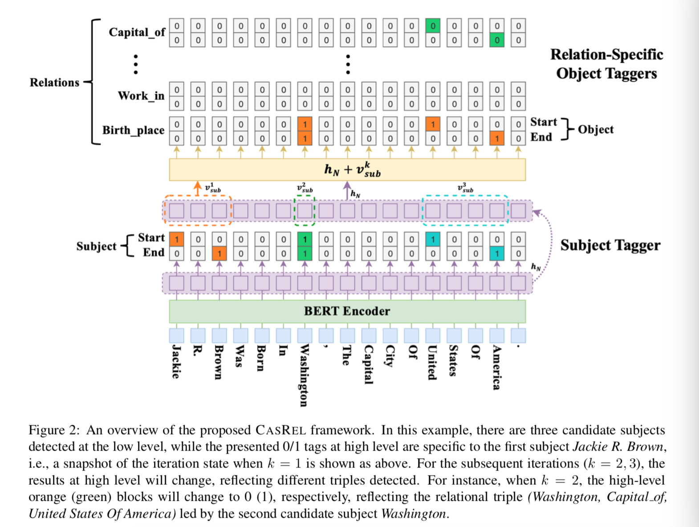
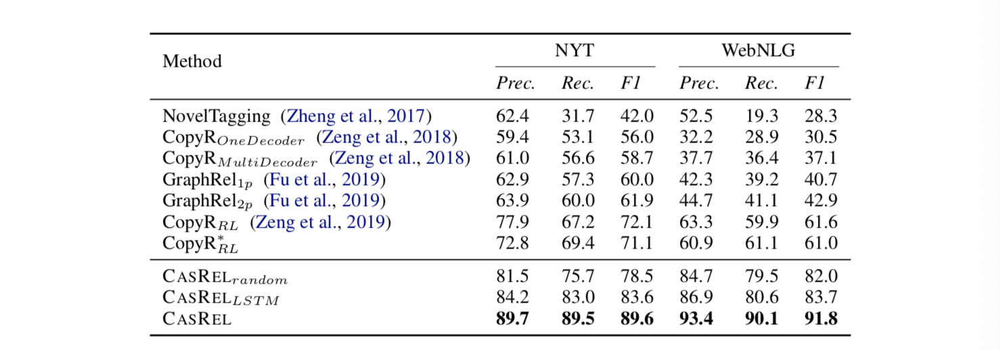

4.2 Casrel模型
Casrel模型
学习目标
- 理解Casrel模型是如何优化RE问题的.
- 掌握Casrel模型的架构和原理.
Casrel模型架构
- Casrel模型是于2020年提出的关系抽取SOTA模型, 原始论文<< A Novel Cascade Binary Tagging Framework for Relational Triple Extraction >>.
- 在RE领域, 有3种典型的抽取模式, 如下图所示:
- Normal模式
- EPO(Entity Pair Overlap)模式
- SEO(Single Entity Overlap)模式

- Casrel模型一改之前的先NER, 后RE的两阶段模式, 采用了更先进的两阶段模式:


- 注意: 上面公式左侧概率值, 代表输入序列中第i个token, 作为subject的起始位置, 结束位置的概率!

- 注意: 上面公式左侧概率值, 代表输入序列中第i个token, 作为object的起始位置, 结束位置的概率!

- Casrel模型在主流标准评测NYT, 和WebNLG中达到了SOTA的成绩:

Casrel模型的实现
- Casrel模型的实现可以分如下步骤完成:
- 第一步: 查看数据集
- 第二步: 实现数据处理和迭代器
- 第三步: 模型类的实现
- 第四步: 评估函数的实现
- 第五步: 训练和测试代码的实现
第一步: 查看数据集
- 本项目中依然采用医疗领域的关系抽取数据CMeIE.
- 训练集数据CMeIE_train.json
- 验证集数据CMeIE_dev.json
- 测试集数据CMeIE_test.json
- 训练集数据路径: /home/ec2-user/information_extraction/relation/casrel/data/CMeIE_train.json
{"text": "产后抑郁症@区分产后抑郁症与轻度情绪失调（产后忧郁或“婴儿忧郁”）是重要的，因为轻度情绪失调不需要治疗。", "spo_list": [{"Combined": false, "predicate": "鉴别诊断", "subject": "产后抑郁症", "subject_type": "疾病", "object": {"@value": "轻度情绪失调"}, "object_type": {"@value": "疾病"}}]}
{"text": "类风湿关节炎@尺侧偏斜是由于MCP关节炎症造成的。", "spo_list": [{"Combined": false, "predicate": "临床表现", "subject": "MCP关节炎症", "subject_type": "疾病", "object": {"@value": "尺侧偏斜"}, "object_type": {"@value": "症状"}}]}
{"text": "唇腭裂@ ### 腭瘘 | 存在差异 | 低 大约 10% 至 20% 颚成形术发生腭瘘。 唇腭裂@腭瘘发生机率与婴儿伤口，营养状况，外科技术和其他因素相关。", "spo_list": [{"Combined": true, "predicate": "风险评估因素", "subject": "腭瘘", "subject_type": "疾病", "object": {"@value": "婴儿伤口"}, "object_type": {"@value": "社会学"}}, {"Combined": true, "predicate": "风险评估因素", "subject": "腭瘘", "subject_type": "疾病", "object": {"@value": "营养状况"}, "object_type": {"@value": "社会学"}}, {"Combined": true, "predicate": "风险评估因素", "subject": "腭瘘", "subject_type": "疾病", "object": {"@value": "外科技术"}, "object_type": {"@value": "社会学"}}]}
{"text": "成人哮喘@ 应在低剂量 ICS 的基础上加用一种 LABA， 或将ICS增加到中等剂量。 成人哮喘@第 5 级将中等剂量 ICS 改为高剂量 ICS。", "spo_list": [{"Combined": true, "predicate": "药物治疗", "subject": "成人哮喘", "subject_type": "疾病", "object": {"@value": "ICS"}, "object_type": {"@value": "药物"}}, {"Combined": true, "predicate": "药物治疗", "subject": "哮喘", "subject_type": "疾病", "object": {"@value": "中等剂量 ICS"}, "object_type": {"@value": "药物"}}]}
- 验证集数据路径: /home/ec2-user/information_extraction/relation/casrel/data/CMeIE_dev.json
{"text": "急性胰腺炎@有研究显示，进行早期 ERCP （24 小时内）可以降低梗阻性胆总管结石患者的并发症发生率和死亡率； 但是，对于无胆总管梗阻的胆汁性急性胰腺炎患者，不需要进行早期 ERCP。", "spo_list": [{"Combined": false, "predicate": "影像学检查", "subject": "急性胰腺炎", "subject_type": "疾病", "object": {"@value": "ERCP"}, "object_type": {"@value": "检查"}}]}
{"text": "【诊断】 根据疾病诊断和统计手册第4版标准，焦虑情绪持续6个月以上，并至少下述4项症状： 1.担忧将来的意外事件； 2.担忧自己的能力； 3.担忧过去的行为； 4.躯体不适症状； 5.自我意识（对主体的自我认识）； 6.不断需要得到他人的确认； 7.持续紧张和（或）不能放松； 广泛性焦虑症影响社会交往，与分离性焦虑症比较，更多伴有其他焦虑症，如惊恐发作或单纯性恐怖症。 （二）社交性焦虑 尽管两种疾病均害怕在公众场合下说话，但广泛性焦虑也害怕对过去和将来情形的焦虑。", "spo_list": [{"Combined": true, "predicate": "鉴别诊断", "subject": "广泛性焦虑症", "subject_type": "疾病", "object": {"@value": "社交性焦虑"}, "object_type": {"@value": "疾病"}}, {"Combined": true, "predicate": "鉴别诊断", "subject": "广泛性焦虑症", "subject_type": "疾病", "object": {"@value": "分离性焦虑"}, "object_type": {"@value": "疾病"}}]}
{"text": "骨性关节炎@在其他关节（如踝关节和腕关节），骨性关节炎比较少见，并且一般有潜在的病因（如结晶性关节病、创伤）。", "spo_list": [{"Combined": false, "predicate": "发病部位", "subject": "骨性关节炎", "subject_type": "疾病", "object": {"@value": "关节"}, "object_type": {"@value": "部位"}}, {"Combined": false, "predicate": "发病部位", "subject": "骨性关节炎", "subject_type": "疾病", "object": {"@value": "踝关节"}, "object_type": {"@value": "部位"}}, {"Combined": false, "predicate": "发病部位", "subject": "骨性关节炎", "subject_type": "疾病", "object": {"@value": "腕关节"}, "object_type": {"@value": "部位"}}, {"Combined": false, "predicate": "病因", "subject": "骨性关节炎", "subject_type": "疾病", "object": {"@value": "结晶性关节病"}, "object_type": {"@value": "社会学"}}, {"Combined": false, "predicate": "病因", "subject": "骨性关节炎", "subject_type": "疾病", "object": {"@value": "创伤"}, "object_type": {"@value": "社会学"}}]}
- 测试集数据路径: /home/ec2-user/information_extraction/relation/casrel/data/CMeIE_test.json
{"text": "痔@肛镜检查方法简便安全，可全方位观察肛管及所有痔组织。痔@另一种替代的方法为纤维内窥镜反转观察，此法操作要求高，需更高的技巧水平。"}
{"text": "慢性肾病@进行眼底检查十分必要，因为其有助于诊断糖尿病性或高血压性视网膜病变，有助于判断在肾脏内可能发生的微血管病变。"}
{"text": "5.药物因素 引起消化性溃疡的药物中较重要的有三类：①阿司匹林（ASA）；②非甾体抗炎药物（NSAIDs），如吲哚美辛及保泰松；③肾上腺皮质激素。 7.精神因素 15年前，对胃造瘘患者观察发现，人胃黏膜随人的情绪变化而出现不同的反应，兴奋时，胃黏膜充血，胃液分泌增多，胃运动加强；而抑郁和绝望时，胃黏膜苍白，胃运动减慢。"}
{"text": "登革热@大约 90% 的登革出血热 (dengue haemorrhagic fever, DHF) 病例为 5 岁以下儿童。登革热@ 典型的登革热更常见于成人，而非儿童。"}
{"text": "【病因】 缺氧是HIE发病的核心,其中围生期窒息是最主要的病因。 【发病机制】 脑血流改变 当缺氧缺血为部分或慢性时,体内血液出现重新分配，以保证心、脑等重要器官血液供应,而肺、肾、胃肠道等相对次重要器官受损。"}
{"text": "高血压急症的治疗，原则是将血压降至安全水平而非迅速降至正常，保证组织器官的灌注，防止器官损害的进一步发展。 4.柳胺苄心定（labetalol） 兼有α和β受体阻滞作用，每次0. 25～1. 0mg/kg（每次最多20mg）静脉注射，作用持续达4小时，需要时每10分钟后重复1次；持续静脉滴注剂量为每小时0. 4～1. 0mg/kg，最高可达每小时3mg/kg。"}
{"text": "心房扑动@ 心电图具有诊断意义： * 典型的形式（逆时针心房扑动）：Ⅱ、Ⅲ、aVF 导联可见负向锯齿状心房波（F 波），在 V1 导联正向心房扑动波，心房率为 240-320 次/分。心房扑动@当怀疑急性心肌梗死时，应查心肌酶谱，若患者正在应用洋地黄类药物（例如地高辛），应检测洋地黄类药物的血药浓度。"}
{"text": "帕金森病@ * 加入当地支持团队可能会有所帮助。"}
- 关系映射表数据路径: /home/ec2-user/information_extraction/relation/casrel/data/relation2idx.json
{"预防": 0, "阶段": 1, "就诊科室": 2, "同义词-其他": 3, "辅助治疗": 4, "化疗": 5, "放射治疗": 6, "同义词-其他治疗": 7, "手术治疗": 8, "同义词-手术治疗": 9, "实验室检查": 10, "影像学检查": 11, "辅助检查": 12, "组织学检查": 13, "同义词-检查": 14, "内窥镜检查": 15, "筛查": 16, "多发群体": 17, "发病率": 18, "发病年龄": 19, "多发地区": 20, "发病性别倾向": 21, "死亡率": 22, "多发季节": 23, "传播途径": 24, "同义词-流行病学": 25, "同义词-疾病": 26, "并发症": 27, "病理分型": 28, "相关（导致）": 29, "鉴别诊断": 30, "相关（转化）": 31, "相关（症状）": 32, "临床表现": 33, "治疗后症状": 34, "侵及周围组织转移的症状": 35, "同义词-症状": 36, "病因": 37, "高危因素": 38, "风险评估因素": 39, "病史": 40, "遗传因素": 41, "同义词-社会学": 42, "发病机制": 43, "病理生理": 44, "药物治疗": 45, "同义词-药物": 46, "发病部位": 47, "转移部位": 48, "外侵部位": 49, "同义词-部位": 50, "预后状况": 51, "预后生存率": 52}
第二步: 实现数据处理和迭代器
- 代码路径: /home/ec2-user/information_extraction/relation/casrel/dataloader.py
import json
import re
import torch
from torch.utils.data import Dataset, DataLoader
from torch.nn.utils.rnn import pad_sequence, pack_padded_sequence
from transformers import BertTokenizer
from random import choice
import codecs
device = torch.device('cuda' if torch.cuda.is_available() else 'cpu')
# 构造数据集的类代码
class MyDataset(Dataset):
# 读取训练集数据
def __get_train_data(self, path):
with open(path, 'r', encoding='utf-8') as f:
data = f.readlines()
res = [json.loads(i) for i in data]
return res
# 读取验证集数据
def __get_dev_data(self, path):
with open(path, 'r', encoding='utf-8') as f:
data = f.readlines()
res = [json.loads(i) for i in data]
return res
# 读取测试集数据
def __get_test_data(self, path):
with open(path, 'r', encoding='utf-8') as f:
data = f.readlines()
data = [json.loads(i) for i in data]
res = []
for entry in data:
entry['spo_list'] = []
res.append(entry)
return res
def __init__(self, path, config):
super(MyDataset, self).__init__()
self.config =config
if self.config['mode'] == 'train':
self.data = self.__get_train_data(path)
elif self.config['mode'] == 'test':
self.data = self.__get_test_data(path)
elif self.config['mode'] == 'dev':
self.data = self.__get_dev_data(path)
# 读取关系映射表, 并构造关系-id映射字典
with open('data/relation2idx.json', 'r', encoding='utf-8') as f:
self.relation2idx = json.load(f)
self.idx2relation = dict()
for key in self.relation2idx:
self.idx2relation[self.relation2idx[key]] = key
# 设置基础预训练模型
bert_path = '/home/ec2-user/code/re/casrel/bert_pretrain/'
self.tokenizer = BertTokenizer.from_pretrained(bert_path)
def __len__(self):
return len(self.data)
# 按照索引标签获取数据的重写函数
def __getitem__(self, item):
text, gold = self.data[item]['text'], self.data[item]['spo_list']
text = text if len(text) <= 512 else text[:512]
# 完成token_to_id的映射
sample = list(text)
sample = self.tokenizer.convert_tokens_to_ids(sample)
# 设置Subject和relation的起始, 结束标签位置张量
sub_start = len(sample) * [0]
sub_end = len(sample) * [0]
relation_start = [[0 for _ in range(self.config['relation_types'])] for _ in range(len(sample))]
relation_end = [[0 for _ in range(self.config['relation_types'])] for _ in range(len(sample))]
# dim = (seq_len, relation_types)
sub_start_single = len(sample) * [0]
sub_end_single = len(sample) * [0]
s2ro_map = {}
# 解析数据文件中的具体值
for entry in gold:
sub = entry['subject']
obj = entry['object']['@value']
relation = '同义词-' + entry['subject_type'] if entry['predicate'] == '同义词' else entry['predicate']
# 正则表达式无法处理小括号, 所以抛出异常
try:
sub_pos = re.search(sub, text).span()
obj_pos = re.search(obj, text).span()
relation_idx = self.relation2idx[relation]
sub_start[sub_pos[0]] = 1
sub_end[sub_pos[1]-1] = 1
if sub_pos not in s2ro_map:
s2ro_map[sub_pos] = []
s2ro_map[sub_pos].append((obj_pos, relation_idx))
except:
pass
# 如果能解析出有效数据, 则填充对应的张量
if s2ro_map:
sub_pos = choice(list(s2ro_map.keys()))
sub_start_single[sub_pos[0]] = 1
sub_end_single[sub_pos[1] - 1] = 1
for obj_pos, relation_idx in s2ro_map.get(sub_pos, []):
relation_start[obj_pos[0]][relation_idx] = 1
relation_end[obj_pos[1]-1][relation_idx] = 1
# print('****************************')
# print('sample:', sample)
# print('sub_start:', sub_start)
# print(len(sub_start))
# print('sub_end:', sub_end)
# print(len(sub_end))
# print('relation_start:', relation_start)
# print('relation_end:', relation_end)
# print('sub_start_single:', sub_start_single)
# print('sub_end_single:', sub_end_single)
# print(len(sub_start_single))
# print(len(sub_end_single))
return sample, sub_start, sub_end, relation_start, relation_end, sub_start_single, sub_end_single
# 数据的"个性化"处理函数
def collate_fn(data):
data.sort(key= lambda x: len(x[0]), reverse = True)
sample, sub_start, sub_end, relation_start, relation_end, sub_start_single, sub_end_single = zip( *data)
# 对所有数据依次进行映射, 封装, 转移到GPU等
mask = [[1 if j < len(i) else 0 for j in range(len(sample[0]))] for i in sample]
sample = [torch.tensor(i).long().to(device) for i in sample]
sub_start = [torch.tensor(i).long().to(device) for i in sub_start]
sub_end = [torch.tensor(i).long().to(device) for i in sub_end]
relation_start = [torch.tensor(i).long().to(device) for i in relation_start]
relation_end = [torch.tensor(i).long().to(device) for i in relation_end]
sub_start_single = [torch.tensor(i).long().to(device) for i in sub_start_single]
sub_end_single = [torch.tensor(i).long().to(device) for i in sub_end_single]
# 对所有数据依次进行pad补齐操作
mask = torch.tensor(mask).long().to(device)
sample = pad_sequence(sample, batch_first=True, padding_value=0)
sub_start = pad_sequence(sub_start, batch_first=True, padding_value=0)
sub_end = pad_sequence(sub_end, batch_first=True, padding_value=0)
relation_start = pad_sequence(relation_start, batch_first=True, padding_value=0)
relation_end = pad_sequence(relation_end, batch_first=True, padding_value=0)
sub_start_single = pad_sequence(sub_start_single, batch_first=True, padding_value=0)
sub_end_single = pad_sequence(sub_end_single, batch_first=True, padding_value=0)
return sample, sub_start, sub_end, relation_start, relation_end, mask, sub_start_single, sub_end_single
if __name__ == "__main__":
path = './data/CMeIE_train.json'
config = {"mode": "train", "relation_types": 53}
data = MyDataset(path, config)
dataloader = DataLoader(data, batch_size=4, shuffle=False, collate_fn=collate_fn)
batch_data = next(iter(dataloader))
file = codecs.open('debug.txt', 'w', encoding='utf-8')
test_idx = 30
a, b = batch_data[3][test_idx], batch_data[4][test_idx]
for i in batch_data:
file.write(str(i[test_idx]) + '\n')
for i in range(a.shape[0]):
file.write(str(i) + str(b[i]) + '\n')
第三步: 模型类的实现
- 代码路径: /home/ec2-user/information_extraction/relation/casrel/casrel.py
import torch
import torch as t
from torch import nn
from transformers import BertModel, BertTokenizer, BertConfig
import numpy as np
device = torch.device('cuda' if torch.cuda.is_available() else 'cpu')
# Casrel核心类代码
class CasRel(nn.Module):
def __init__(self, config):
super(CasRel, self).__init__()
self.config = config
self.bert_dim = 768
# 预训练模型的加载
model_name = 'bert-base-chinese'
self.bert_path = "/home/ec2-user/code/re/casrel/bert_pretrain"
self.bert_config = BertConfig.from_pretrained(self.bert_path + '/bert_config.json')
self.bert_encoder = BertModel.from_pretrained(self.bert_path, config=self.bert_config)
# 依次初始化4个重要索引
self.sub_start_tagger = nn.Linear(self.bert_dim, 1)
self.sub_end_tagger = nn.Linear(self.bert_dim, 1)
self.obj_start_tagger = nn.Linear(self.bert_dim, config['relation_types'])
self.obj_end_tagger = nn.Linear(self.bert_dim, config['relation_types'])
# 获取BERT的输出编码张量
def get_encoded_text(self, data):
encoded_text = self.bert_encoder(data['token_ids'], attention_mask=data['mask'])[0]
# (batch_size, seq_len, bert_dim)
return encoded_text
# 获取Subject的预测张量
def get_sub(self, encoded_text):
# dim(pred) = (batch_size, seq_len, 1)
# 获取起始指针
pred_sub_start = self.sub_start_tagger(encoded_text)
pred_sub_start = torch.sigmoid(pred_sub_start)
# 获取结束指针
pred_sub_end = self.sub_end_tagger(encoded_text)
pred_sub_end = torch.sigmoid(pred_sub_end)
return pred_sub_start, pred_sub_end
# 获取Object的预测张量
def get_obj(self, sub_start_mapping, sub_end_mapping, encoded_text):
# dim(sub_start_mapping) = dim(sub_end_mapping) = (batch_size, 1, seq_len)
# dim(encoded_text) = (batch_size, seq_len, bert_dim)
# 按照论文中的公式变体, 首先对Xi, 和start_mapping进行矩阵乘法, 得到start张量; end同理
sub_start = torch.matmul(sub_start_mapping.float(), encoded_text)
sub_end = torch.matmul(sub_end_mapping.float(), encoded_text)
# dim(sub_start) = dim(sub_end) = (batch_size, 1, bert_dim)
# 按照论文中的公式计算
sub = (sub_start + sub_end) / 2
encoded_text = encoded_text + sub
# 按照论文中的公式, 进行W_start(r)的矩阵运算; W_end(r)同理
pred_obj_start = self.obj_start_tagger(encoded_text)
pred_obj_end = self.obj_end_tagger(encoded_text)
pred_obj_start = torch.sigmoid(pred_obj_start)
pred_obj_end = torch.sigmoid(pred_obj_end)
# 最终返回object的首尾指针
return pred_obj_start, pred_obj_end
def get_list(self, start, end, text, h_bar=0.5, t_bar=0.5):
# 初始化识别出来的entities的结果列表res
res = []
# 进行列表长度的截断
start, end = start[: 512], end[: 512]
start_idxs, end_idxs = [], []
# 初始化列表值
for idx in range(len(start)):
if(start[idx] > h_bar):
start_idxs.append(idx)
if(end[idx] > t_bar):
end_idxs.append(idx)
# 遍历起始和结束位置, 将识别出来的实体添加进结果列表
for start_idx in start_idxs:
for end_idx in end_idxs:
if(end_idx >= start_idx):
# 将识别出的entity的重要信息以字典形式添加进结果列表res
entry = {}
entry['text'] = text[start_idx: end_idx + 1]
entry['start'] = start_idx
entry['end'] = end_idx
res.append(entry)
break
return res
# Casrel模型的前向计算函数
def forward(self, data):
# 1: 第一步将原始文本送入编码器BERT中
encoded_text = self.get_encoded_text(data)
# 2: 第二步进行Subject的首尾指针预测
pred_sub_start, pred_sub_end = self.get_sub(encoded_text)
# 3: 将真实数据中的start, end标签提取出来
sub_start_mapping = data['sub_start'].unsqueeze(1)
sub_end_mapping = data['sub_end'].unsqueeze(1)
# 4: 调用类内函数, 将模型预测的object的start, end指针提取出来
pred_obj_start, pred_obj_end = self.get_obj(sub_start_mapping, sub_end_mapping, encoded_text)
return pred_sub_start, pred_sub_end, pred_obj_start, pred_obj_end
# 推理阶段的函数(Inference)
def test(self, data):
# 将原始文本数据送入BERT编码器中
encoded_text = self.get_encoded_text(data)
# 提取Subject的首尾指针
pred_sub_start, pred_sub_end = self.get_sub(encoded_text)
# 获取结果列表
sub_list = self.get_list(pred_sub_start.squeeze(0).squeeze(-1), pred_sub_end.squeeze(0).squeeze(-1), data['text'])
if(sub_list):
# 初始化若干重要张量
repeated_encoded_text = encoded_text.repeat(len(sub_list), 1, 1)
sub_start_mapping = torch.zeros(len(sub_list), 1, encoded_text.shape[1]).to(device)
sub_end_mapping = torch.zeros(len(sub_list), 1, encoded_text.shape[1]).to(device)
for idx, sub in enumerate(sub_list):
sub_start_mapping[idx][0][sub['start']] = 1
sub_end_mapping[idx][0][sub['end']] = 1
# 按照Subject, 模型提取出Object
pred_obj_start, pred_obj_end = self.get_obj(sub_start_mapping, sub_end_mapping, repeated_encoded_text)
return sub_list, pred_obj_start, pred_obj_end
# 如果没有Subject, 直接返回None
else:
return None
第四步: 评估函数的实现
- 代码路径: /home/ec2-user/information_extraction/relation/casrel/evaluate.py
import json
import codecs
# 评估函数
def evaluate():
# 读取评估数据, 包括预测结果和真实标签
pred_path = './data/CMeIE_dev_result.json' # prediction
gold_path = "./data/CMeIE_dev.json" # golden state
res_path = './data/eval_dev.json'
pred_file = codecs.open(pred_path, 'r', encoding='utf-8')
gold_file = codecs.open(gold_path, 'r', encoding='utf-8')
# 每个epoch会调用一次评估函数, 但只保存效果最好的模型评测数据
res_file = codecs.open(res_path, 'w', encoding='utf-8')
# 读取文件信息并存入列表格式
pred_data = pred_file.readlines()
pred_data = [json.loads(i) for i in pred_data]
# 读取文件信息并存入列表格式
gold_data = gold_file.readlines()
gold_data = [json.loads(i) for i in gold_data]
# 将预测值和真实值做配对
data = zip(pred_data, gold_data)
correct_num = 0
pred_num = 0
gold_num = 0
# 遍历数据做正负样本的计数
for pred, gold in data:
# 预测值的读取和集合去重
pred_spo = [(i['predicate'], i['subject'], i['subject_type'], i['object']['@value'], i['object_type']['@value']) for i in pred['spo_list']]
pred_spo = set(pred_spo)
# 真实值的读取和集合去重
gold_spo = [(i['predicate'], i['subject'], i['subject_type'], i['object']['@value'], i['object_type']['@value']) for i in gold['spo_list']]
gold_spo = set(gold_spo)
# 做交集得出预测正确的数量
correct_num += len(pred_spo & gold_spo)
pred_num += len(pred_spo)
gold_num += len(gold_spo)
# 以字典格式存储评估结果并存入文件
entry = {}
entry['text'] = pred['text']
entry['gold'] = list(gold_spo)
entry['pred'] = list(pred_spo)
entry['new'] = list(pred_spo - gold_spo)
entry['lack'] = list(gold_spo - pred_spo)
json.dump(entry, res_file, ensure_ascii=False, indent=4, separators=(',', ':'))
# 按照公式计算presition, recall, f1的值
eps = 1e-6
p = correct_num / (pred_num + eps)
r = correct_num / (gold_num + eps)
f1 = (2 * p * r) / (p + r + eps)
print('f1: {}, precision: {}, recall: {}'.format(f1, p, r))
return f1, p, r
if __name__ == '__main__':
f1, p, r = evaluate()
print('f1: {}, precision: {}, recall: {}'.format(f1, p, r))
第五步: 训练和测试代码的实现
- 代码路径: /home/ec2-user/information_extraction/relation/casrel/train.py
# 导入工具包
import time
from tqdm import tqdm
import torch
import torch.nn.functional as F
from casrel import CasRel
from torch.utils.data import DataLoader
from dataloader import MyDataset, collate_fn
from test import test_casrel
from evaluate import evaluate
# 设定训练设备(GPU, CPU)
device = torch.device('cuda' if torch.cuda.is_available() else 'cpu')
torch.set_num_threads(6)
# 损失计算函数, 当前模型采用二分交叉熵损失
def get_loss(pred, gold, mask):
pred = pred.squeeze(-1)
# 按照二分交叉熵损失计算, 并以向量形式返回loss
loss = F.binary_cross_entropy(pred, gold.float(), reduction='none')
# 将mask张量的维度扩展成和loss一致
if loss.shape != mask.shape:
mask = mask.unsqueeze(-1)
# 对损失张量进行掩码计算, 并归一化
loss = torch.sum(loss * mask) / torch.sum(mask)
return loss
if __name__ == '__main__':
config = {'mode': 'train', 'batch_size': 16, 'epoch': 50, 'relation_types': 53, 'sub_weight': 1, 'obj_weight': 1}
model_save_path = './saved_model/model_casrel.pt'
f_dev_result = open('./data/dev_result.txt', 'a', encoding='utf-8')
best_f1_file = open('./data/best_f1.txt', 'a', encoding='utf-8')
# 实例化数据集对象, 并构建训练数据的迭代器
path_train = './data/CMeIE_train.json'
data_train = MyDataset(path_train, config)
dataloader_train = DataLoader(data_train,
batch_size=config['batch_size'],
shuffle=True,
collate_fn=collate_fn)
# 实例化Casrel模型类对象
model = CasRel(config).to(device)
# 实例化优化器对象
optimizer = torch.optim.Adam(model.parameters(), lr=1e-5, betas=(0.9, 0.999))
best_f1 = 0.0
# 经典双重for循环进行模型训练
for epoch_index in range(config['epoch']):
time_start = time.time()
print("epoch: %d......" % (epoch_index))
for batch_index, (sample, sub_start, sub_end, relation_start, relation_end, mask, sub_start_single, sub_end_single) in tqdm(enumerate(dataloader_train)):
batch_data = dict()
batch_data['token_ids'] = sample
batch_data['mask'] = mask
batch_data['sub_start'] = sub_start_single
batch_data['sub_end'] = sub_end_single
# 经典"老三样"
optimizer.zero_grad()
# 模型会返回4个重要指针变量
pred_sub_start, pred_sub_end, pred_obj_start, pred_obj_end = model(batch_data)
# 对4个预测指针分别计算二分交叉熵损失
sub_start_loss = get_loss(pred_sub_start, sub_start, mask)
sub_end_loss = get_loss(pred_sub_end, sub_end, mask)
obj_start_loss = get_loss(pred_obj_start, relation_start, mask)
obj_end_loss = get_loss(pred_obj_end, relation_end, mask)
# subject的损失放在一起计算, object的损失放在一起计算, 分别采用不同的权重
loss = config['sub_weight'] * (sub_start_loss + sub_end_loss) + config['obj_weight'] * (obj_start_loss + obj_end_loss)
loss.backward()
optimizer.step()
if batch_index % 50 == 0:
print("epoch: %d batch: %d loss: %f" % (epoch_index, batch_index, loss))
time_end = time.time()
print("successfully saved! time used = %fs." % (time_end - time_start))
# 每一轮epoch训练结束后, 进行一次验证集的效果评估
dev_file_path = './data/CMeIE_dev.json'
res_path = './data/CMeIE_dev_result.json'
config_dev = {'mode': 'dev', 'batch_size': 1, 'relation_types': 53}
print('epoch: {}, 开始验证集评估...'.format(epoch_index))
test_casrel(model, dev_file_path, res_path, config_dev)
# 预测结束后, 需要在验证结果数据上进行评估
f1, p, r = evaluate()
temp_res = 'f1: {}, precision: {}, recall: {}'.format(f1, p, r)
f_dev_result.write(temp_res + '\n')
print('epoch: {}, 验证集评估结束...\n'.format(epoch_index))
print('f1: {}, precision: {}, recall: {}'.format(f1, p, r))
print('\n')
# 将更优的结果写日志保存, 并将更优的模型保存
if f1 > best_f1:
best_f1 = f1
best_p = p
best_r = r
best_res = 'f1: {}, precision: {}, recall: {}'.format(best_f1, best_p, best_r)
best_f1_file.write(best_res + '\n')
torch.save(model.state_dict(), model_save_path)
- 代码路径: /home/ec2-user/information_extraction/relation/casrel/test.py
import codecs
import torch
import torch.nn.functional as F
from casrel import CasRel
from torch.utils.data import DataLoader
from dataloader import MyDataset, collate_fn
import json
import numpy as np
device = torch.device('cuda' if torch.cuda.is_available() else 'cpu')
torch.set_num_threads(6)
def trans_schemas(path):
rel2sub = dict()
rel2obj = dict()
with open(path, 'r', encoding='utf-8') as f:
sens = f.readlines()
schemas = []
for sen in sens:
schemas.append(json.loads(sen.strip()))
for entry in schemas:
rel2sub[entry['predicate']] = entry['subject_type']
rel2obj[entry['predicate']] = entry['object_type']
return rel2sub, rel2obj
def get_list(start, end, text, h_bar=0.5, t_bar=0.5):
res = []
start, end = start[:512], end[:512]
start_idxs, end_idxs = [], []
for idx in range(len(start)):
if (start[idx] > h_bar):
start_idxs.append(idx)
if (end[idx] > t_bar):
end_idxs.append(idx)
for start_idx in start_idxs:
for end_idx in end_idxs:
if (end_idx >= start_idx):
entry = {}
entry['text'] = text[start_idx: end_idx + 1]
entry['start'] = start_idx
entry['end'] = end_idx
res.append(entry)
break
return res
def get_text(path):
with open(path, 'r', encoding='utf-8') as f:
data = f.readlines()
data = [json.loads(i) for i in data]
return data
def test_casrel(model, path, res_path, config):
# 设置数据集路径
schemas_path = './data/53_schemas.json'
res_file = codecs.open(res_path, 'w', encoding='utf-8')
# 读取测试文件, 并读取schema文件得到(关系-实体)映射字典
raw_data = get_text(path)
rel2sub, rel2obj = trans_schemas(schemas_path)
# 构建数据迭代器DataLoader
data = MyDataset(path, config)
dataloader = DataLoader(data, batch_size=config['batch_size'], shuffle=False, collate_fn=collate_fn)
# 实例化CasRel类对象并加载已训练好的模型
# model = CasRel(config).to(device)
# model.load_state_dict(torch.load('model_casrel.pt'))
# 循环处理测试集数据, 并将结果写入文件
# 遍历测试数据
for batch_index, (sample, sub_start, sub_end, relation_start, relation_end, mask, _, _) in enumerate(iter(dataloader)):
with torch.no_grad():
text = raw_data[batch_index]['text']
batch_data = dict()
batch_data['token_ids'] = sample
batch_data['mask'] = mask
batch_data['text'] = text
ret = model.test(batch_data)
spo_list = []
if ret:
sub_list, pred_obj_start, pred_obj_end = ret
# 遍历模型预测的subject实体
for idx, sub in enumerate(sub_list):
obj_start = pred_obj_start[idx].transpose(0, 1)
obj_end = pred_obj_end[idx].transpose(0, 1)
# 遍历53种关系, 并依次组合成结果字典
for i in range(config['relation_types']):
obj_list = get_list(obj_start[i], obj_end[i], text)
# 遍历第i种关系的object列表
for obj in obj_list:
entry = {}
entry['Combined'] = '。' in text[sub['end']: obj['start']] or '。' in text[obj['end']: sub['start']]
# 以下5个字典必须按照固定格式写入字典
entry['subject'] = sub['text']
entry['predicate'] = data.idx2relation[i]
entry['object'] = {'@value': obj['text']}
entry['subject_type'] = rel2sub[data.idx2relation[i]]
entry['object_type'] = {'@value': rel2obj[data.idx2relation[i]]}
spo_list.append(entry)
# 最外层for循环结束, 将当前批次数据(batch_size=1)的预测结果写入文件中.
res = {}
res['text'] = text
res['spo_list'] = spo_list
json.dump(res, res_file, ensure_ascii=False)
res_file.write('\n')
if batch_index % 500 == 0:
print('batch_index = ', batch_index)
if __name__ == '__main__':
config = {'mode': 'test', 'batch_size': 1, 'relation_types': 53}
path = './data/CMeIE_test.json'
res_path = './data/CMeIE_test_res.json'
# 实例化CasRel类对象并加载已训练好的模型
model = CasRel(config).to(device)
model.load_state_dict(torch.load('./saved_model/model_casrel.pt'))
test_casrel(model, path, res_path, config)
- 注意: 在Tesla T4 GPU环境下, 运行50个epochs, 大约耗时12个小时. 最优表现是epoch=47时, F1=49.89%.